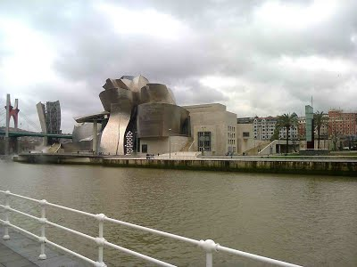

The conference will be held next to the Guggenheim museum, Bilbao
Neigborhood of the conference site. The conference will be held at the University of Deusto, in the building on the right picture.


Neighborhood of the hotel Barcelo Nervion with the bridge designed by Calatrava (the hotel is on the opposite side)